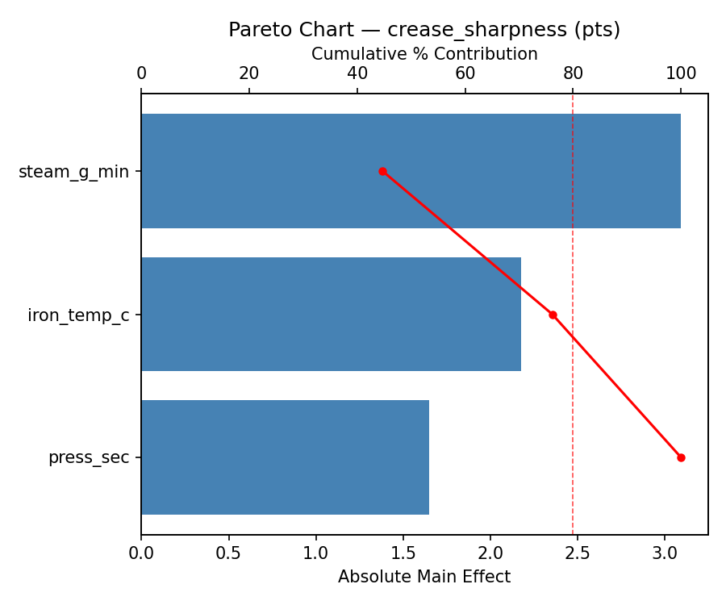
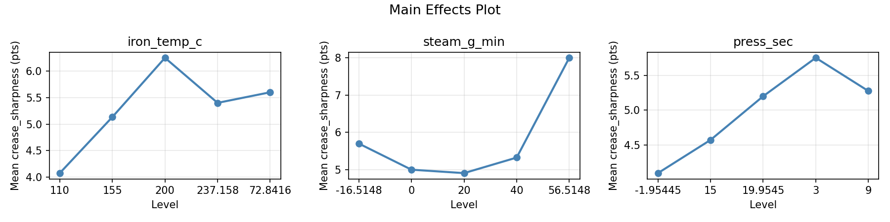
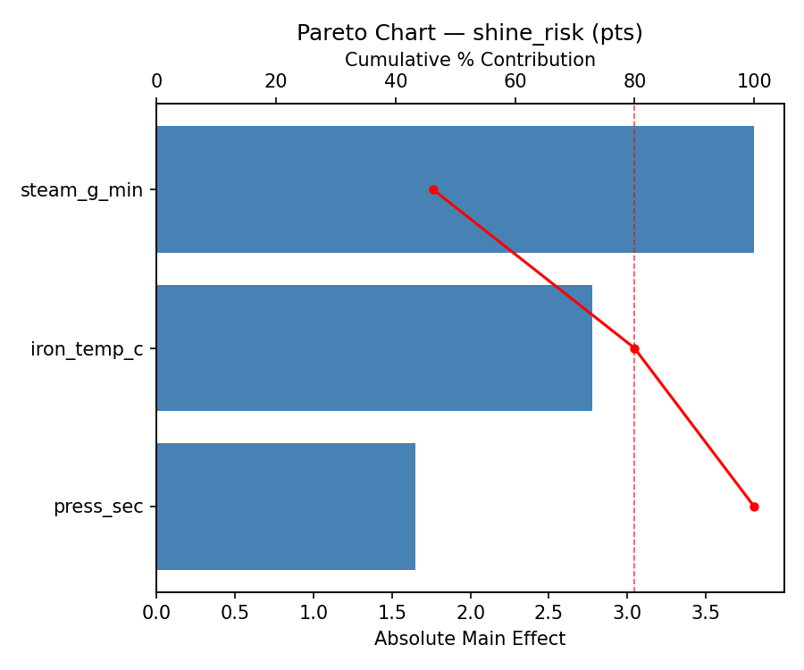
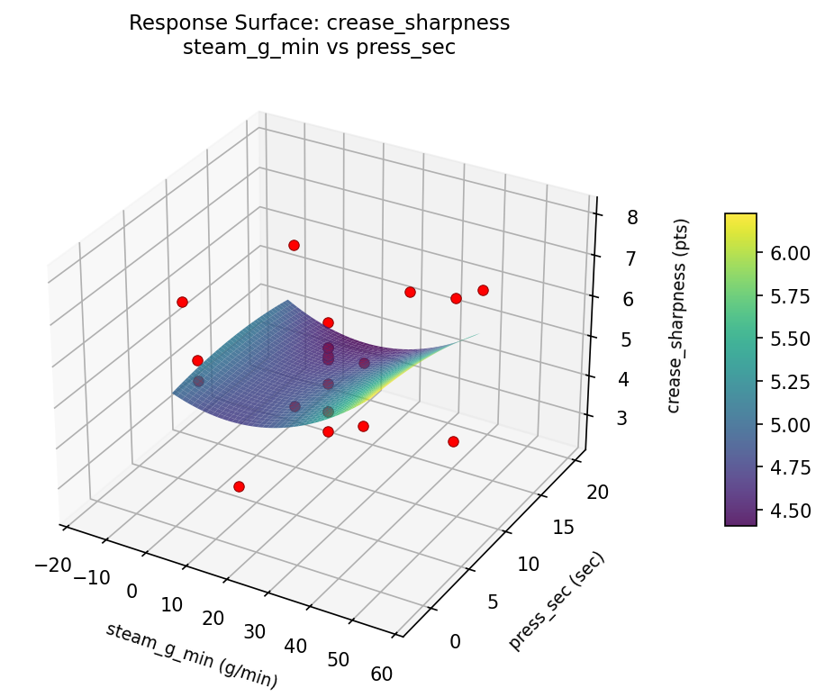
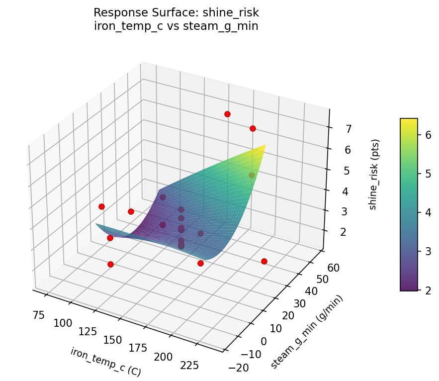

Summary
This experiment investigates garment pressing settings. Central composite design to maximize crease sharpness and minimize fabric shine by tuning iron temperature, steam output, and pressing duration.
The design varies 3 factors: iron temp c (C), ranging from 110 to 200, steam g min (g/min), ranging from 0 to 40, and press sec (sec), ranging from 3 to 15. The goal is to optimize 2 responses: crease sharpness (pts) (maximize) and shine risk (pts) (minimize). Fixed conditions held constant across all runs include fabric = wool_blend, press cloth = yes.
A Central Composite Design (CCD) was selected to fit a full quadratic response surface model, including curvature and interaction effects. With 3 factors this produces 22 runs including center points and axial (star) points that extend beyond the factorial range.
Quadratic response surface models were fitted to capture potential curvature and factor interactions. The RSM contour plots below visualize how pairs of factors jointly affect each response.
Key Findings
For crease sharpness, the most influential factors were steam g min (44.7%), iron temp c (31.4%), press sec (23.9%). The best observed value was 8.0 (at iron temp c = 200, steam g min = 40, press sec = 3).
For shine risk, the most influential factors were steam g min (46.3%), iron temp c (33.7%), press sec (20.0%). The best observed value was 1.5 (at iron temp c = 155, steam g min = 20, press sec = 19.9545).
Recommended Next Steps
- Run confirmation experiments at the predicted optimal settings to validate the model.
- Consider whether any fixed factors should be varied in a future study.
Experimental Setup
Factors
| Factor | Low | High | Unit |
|---|
iron_temp_c | 110 | 200 | C |
steam_g_min | 0 | 40 | g/min |
press_sec | 3 | 15 | sec |
Fixed: fabric = wool_blend, press_cloth = yes
Responses
| Response | Direction | Unit |
|---|
crease_sharpness | ↑ maximize | pts |
shine_risk | ↓ minimize | pts |
Configuration
{
"metadata": {
"name": "Garment Pressing Settings",
"description": "Central composite design to maximize crease sharpness and minimize fabric shine by tuning iron temperature, steam output, and pressing duration"
},
"factors": [
{
"name": "iron_temp_c",
"levels": [
"110",
"200"
],
"type": "continuous",
"unit": "C"
},
{
"name": "steam_g_min",
"levels": [
"0",
"40"
],
"type": "continuous",
"unit": "g/min"
},
{
"name": "press_sec",
"levels": [
"3",
"15"
],
"type": "continuous",
"unit": "sec"
}
],
"fixed_factors": {
"fabric": "wool_blend",
"press_cloth": "yes"
},
"responses": [
{
"name": "crease_sharpness",
"optimize": "maximize",
"unit": "pts"
},
{
"name": "shine_risk",
"optimize": "minimize",
"unit": "pts"
}
],
"settings": {
"operation": "central_composite",
"test_script": "use_cases/186_iron_press_settings/sim.sh"
}
}
Experimental Matrix
The Central Composite Design produces 22 runs. Each row is one experiment with specific factor settings.
| Run | iron_temp_c | steam_g_min | press_sec |
|---|
| 1 | 155 | 20 | 9 |
| 2 | 200 | 0 | 15 |
| 3 | 110 | 40 | 3 |
| 4 | 155 | 56.5148 | 9 |
| 5 | 155 | 20 | 9 |
| 6 | 72.8416 | 20 | 9 |
| 7 | 155 | 20 | -1.95445 |
| 8 | 155 | 20 | 9 |
| 9 | 200 | 40 | 3 |
| 10 | 237.158 | 20 | 9 |
| 11 | 155 | 20 | 9 |
| 12 | 155 | -16.5148 | 9 |
| 13 | 155 | 20 | 9 |
| 14 | 110 | 0 | 15 |
| 15 | 155 | 20 | 9 |
| 16 | 200 | 0 | 3 |
| 17 | 155 | 20 | 19.9545 |
| 18 | 200 | 40 | 15 |
| 19 | 155 | 20 | 9 |
| 20 | 110 | 0 | 3 |
| 21 | 110 | 40 | 15 |
| 22 | 155 | 20 | 9 |
Step-by-Step Workflow
1
Preview the design
$ python doe.py info --config use_cases/186_iron_press_settings/config.json
2
Generate the runner script
$ python doe.py generate --config use_cases/186_iron_press_settings/config.json \
--output use_cases/186_iron_press_settings/results/run.sh --seed 42
3
Execute the experiments
$ bash use_cases/186_iron_press_settings/results/run.sh
4
Analyze results
$ python doe.py analyze --config use_cases/186_iron_press_settings/config.json
5
Get optimization recommendations
$ python doe.py optimize --config use_cases/186_iron_press_settings/config.json
6
Generate the HTML report
$ python doe.py report --config use_cases/186_iron_press_settings/config.json \
--output use_cases/186_iron_press_settings/results/report.html
Features Exercised
| Feature | Value |
|---|
| Design type | central_composite |
| Factor types | continuous (all 3) |
| Arg style | double-dash |
| Responses | 2 (crease_sharpness ↑, shine_risk ↓) |
| Total runs | 22 |
Analysis Results
Generated from actual experiment runs using the DOE Helper Tool.
Response: crease_sharpness
Top factors: steam_g_min (44.7%), iron_temp_c (31.4%), press_sec (23.9%).
Pareto Chart

Main Effects Plot

Response: shine_risk
Top factors: steam_g_min (46.3%), iron_temp_c (33.7%), press_sec (20.0%).
Pareto Chart

Main Effects Plot

Response Surface Plots
3D surfaces fitted with quadratic RSM. Red dots are observed data points.
crease sharpness iron temp c vs press sec

crease sharpness iron temp c vs steam g min

crease sharpness steam g min vs press sec

shine risk iron temp c vs press sec

shine risk iron temp c vs steam g min

shine risk steam g min vs press sec

Full Analysis Output
RSM surface: rsm_crease_sharpness_iron_temp_c_vs_steam_g_min.png
RSM surface: rsm_crease_sharpness_iron_temp_c_vs_press_sec.png
RSM surface: rsm_crease_sharpness_steam_g_min_vs_press_sec.png
RSM surface: rsm_shine_risk_iron_temp_c_vs_steam_g_min.png
RSM surface: rsm_shine_risk_iron_temp_c_vs_press_sec.png
RSM surface: rsm_shine_risk_steam_g_min_vs_press_sec.png
=== Main Effects: crease_sharpness ===
Factor Effect Std Error % Contribution
--------------------------------------------------------------
steam_g_min 3.0917 0.2790 44.7%
iron_temp_c 2.1750 0.2790 31.4%
press_sec 1.6500 0.2790 23.9%
=== Summary Statistics: crease_sharpness ===
iron_temp_c:
Level N Mean Std Min Max
------------------------------------------------------------
110 4 4.0750 1.6581 2.5000 5.7000
155 12 5.1333 1.2228 3.5000 8.0000
200 4 6.2500 0.7188 5.2000 6.8000
237.158 1 5.4000 0.0000 5.4000 5.4000
72.8416 1 5.6000 0.0000 5.6000 5.6000
steam_g_min:
Level N Mean Std Min Max
------------------------------------------------------------
-16.5148 1 5.7000 0.0000 5.7000 5.7000
0 4 5.0000 1.7645 2.5000 6.6000
20 12 4.9083 0.8306 3.5000 6.2000
40 4 5.3250 1.7988 2.8000 6.8000
56.5148 1 8.0000 0.0000 8.0000 8.0000
press_sec:
Level N Mean Std Min Max
------------------------------------------------------------
-1.95445 1 4.1000 0.0000 4.1000 4.1000
15 4 4.5750 2.2277 2.5000 6.6000
19.9545 1 5.2000 0.0000 5.2000 5.2000
3 4 5.7500 0.7326 5.2000 6.8000
9 12 5.2750 1.1841 3.5000 8.0000
=== Main Effects: shine_risk ===
Factor Effect Std Error % Contribution
--------------------------------------------------------------
steam_g_min 3.8083 0.3304 46.3%
iron_temp_c 2.7750 0.3304 33.7%
press_sec 1.6500 0.3304 20.0%
=== Summary Statistics: shine_risk ===
iron_temp_c:
Level N Mean Std Min Max
------------------------------------------------------------
110 4 2.3250 0.7932 1.5000 3.1000
155 12 3.4667 1.4374 2.2000 6.7000
200 4 5.1000 1.7474 3.2000 7.4000
237.158 1 2.7000 0.0000 2.7000 2.7000
72.8416 1 3.0000 0.0000 3.0000 3.0000
steam_g_min:
Level N Mean Std Min Max
------------------------------------------------------------
-16.5148 1 5.9000 0.0000 5.9000 5.9000
0 4 3.1750 1.1442 1.8000 4.6000
20 12 2.8917 0.5384 2.2000 4.0000
40 4 4.2500 2.5955 1.5000 7.4000
56.5148 1 6.7000 0.0000 6.7000 6.7000
press_sec:
Level N Mean Std Min Max
------------------------------------------------------------
-1.95445 1 2.5000 0.0000 2.5000 2.5000
15 4 3.2750 1.8963 1.5000 5.2000
19.9545 1 3.0000 0.0000 3.0000 3.0000
3 4 4.1500 2.1703 2.9000 7.4000
9 12 3.4833 1.4263 2.2000 6.7000
Pareto chart (crease_sharpness): use_cases/186_iron_press_settings/results/analysis/pareto_crease_sharpness.png
Pareto chart (shine_risk): use_cases/186_iron_press_settings/results/analysis/pareto_shine_risk.png
Main effects (crease_sharpness): use_cases/186_iron_press_settings/results/analysis/main_effects_crease_sharpness.png
Main effects (shine_risk): use_cases/186_iron_press_settings/results/analysis/main_effects_shine_risk.png
Optimization Recommendations
=== Optimization: crease_sharpness ===
Direction: maximize
Best observed run: #18
iron_temp_c = 200
steam_g_min = 40
press_sec = 3
Value: 8.0
RSM Model (linear, R² = 0.2448, Adj R² = 0.1189):
Coefficients:
intercept +5.1773
iron_temp_c +0.2920
steam_g_min +0.3839
press_sec -0.6062
RSM Model (quadratic, R² = 0.7197, Adj R² = 0.5095):
Coefficients:
intercept +5.5075
iron_temp_c +0.2920
steam_g_min +0.3839
press_sec -0.6062
iron_temp_c*steam_g_min +0.7625
iron_temp_c*press_sec +0.5625
steam_g_min*press_sec -0.6375
iron_temp_c^2 -0.0051
steam_g_min^2 +0.0699
press_sec^2 -0.5601
Curvature analysis:
press_sec coef=-0.5601 concave (has a maximum)
steam_g_min coef=+0.0699 negligible curvature
iron_temp_c coef=-0.0051 negligible curvature
Notable interactions:
iron_temp_c*steam_g_min coef=+0.7625 (synergistic)
steam_g_min*press_sec coef=-0.6375 (antagonistic)
iron_temp_c*press_sec coef=+0.5625 (synergistic)
Predicted optimum (from quadratic model):
iron_temp_c = 200
steam_g_min = 40
press_sec = 3
Predicted value: 7.1317
Model quality: Good fit — general trends are captured, some noise remains.
Factor importance:
1. press_sec (effect: 3.2, contribution: 59.1%)
2. steam_g_min (effect: 1.2, contribution: 22.3%)
3. iron_temp_c (effect: 1.0, contribution: 18.6%)
=== Optimization: shine_risk ===
Direction: minimize
Best observed run: #20
iron_temp_c = 155
steam_g_min = 20
press_sec = 19.9545
Value: 1.5
RSM Model (linear, R² = 0.1108, Adj R² = -0.0374):
Coefficients:
intercept +3.5000
iron_temp_c +0.3080
steam_g_min +0.3465
press_sec -0.4076
RSM Model (quadratic, R² = 0.3961, Adj R² = -0.0568):
Coefficients:
intercept +4.0855
iron_temp_c +0.3080
steam_g_min +0.3465
press_sec -0.4076
iron_temp_c*steam_g_min +0.3875
iron_temp_c*press_sec +0.2375
steam_g_min*press_sec -0.8875
iron_temp_c^2 -0.1528
steam_g_min^2 -0.1828
press_sec^2 -0.5428
Curvature analysis:
press_sec coef=-0.5428 concave (has a maximum)
steam_g_min coef=-0.1828 concave (has a maximum)
iron_temp_c coef=-0.1528 concave (has a maximum)
Notable interactions:
steam_g_min*press_sec coef=-0.8875 (antagonistic)
iron_temp_c*steam_g_min coef=+0.3875 (synergistic)
Predicted optimum (from linear model):
iron_temp_c = 200
steam_g_min = 40
press_sec = 3
Predicted value: 4.5621
Model quality: Weak fit — consider adding center points or using a different design.
Factor importance:
1. press_sec (effect: 2.7, contribution: 52.5%)
2. steam_g_min (effect: 1.2, contribution: 24.3%)
3. iron_temp_c (effect: 1.2, contribution: 23.3%)